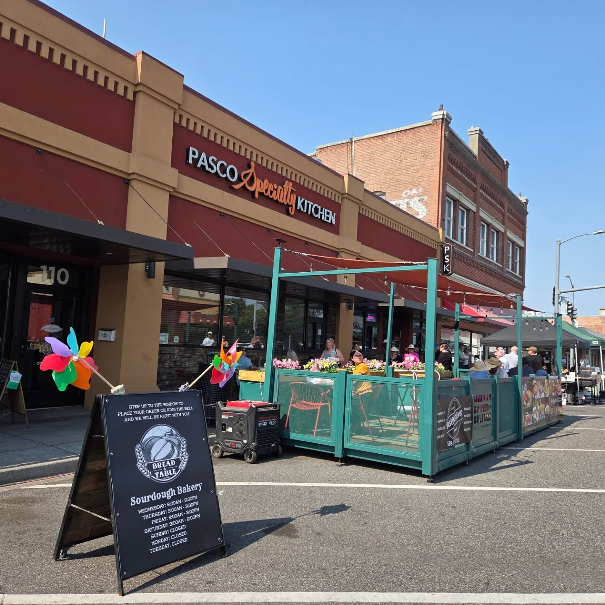
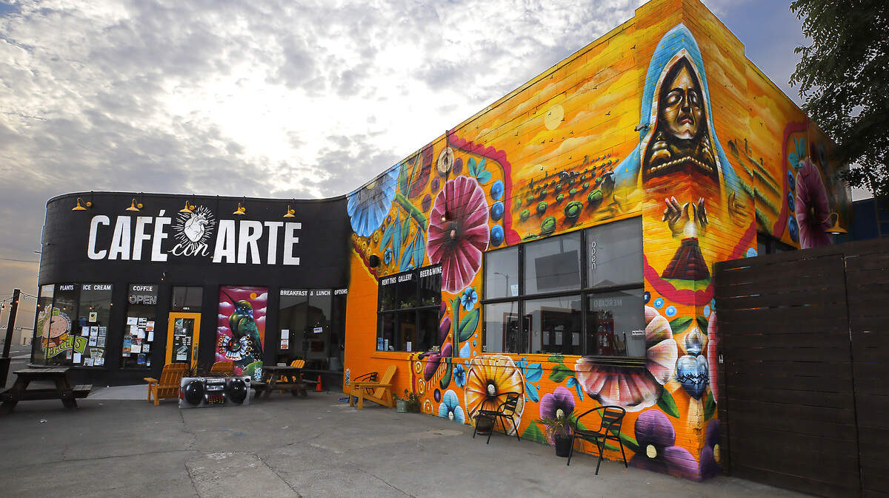
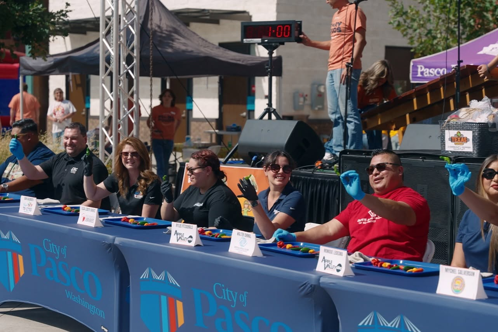
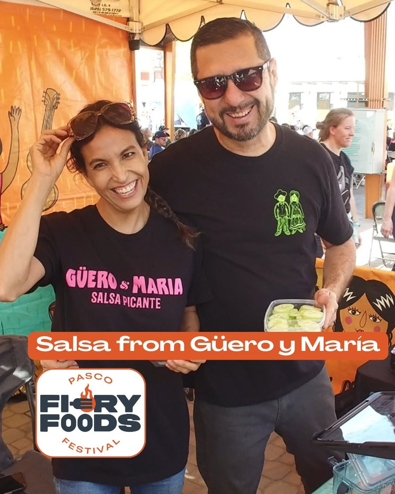
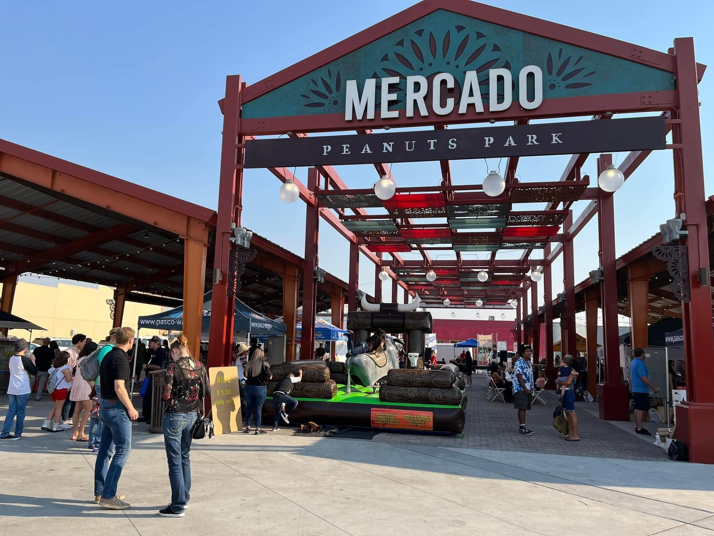
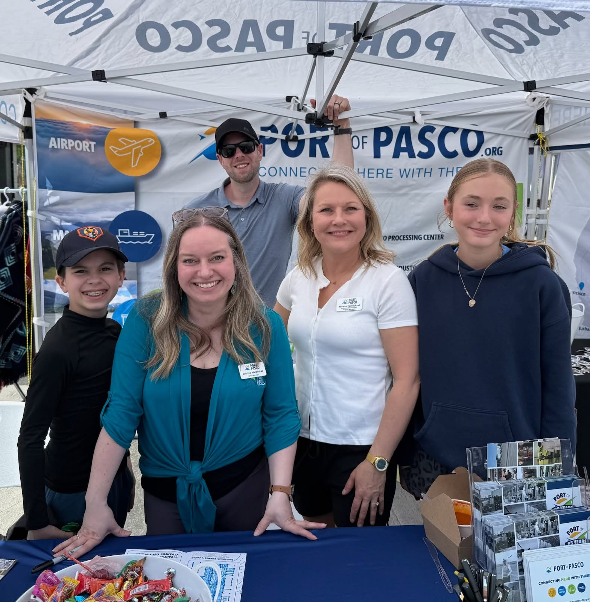
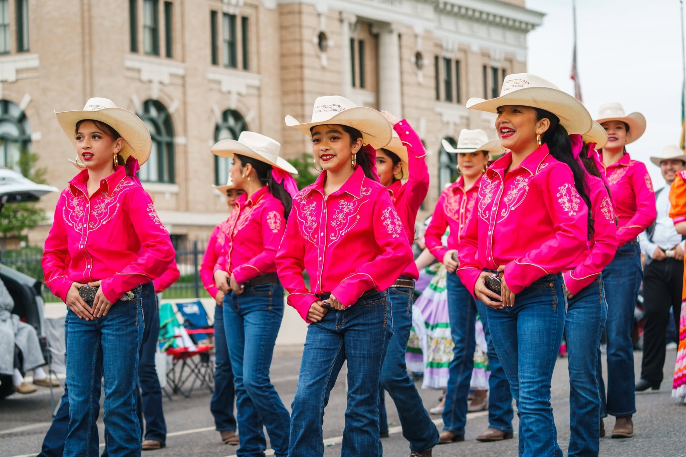
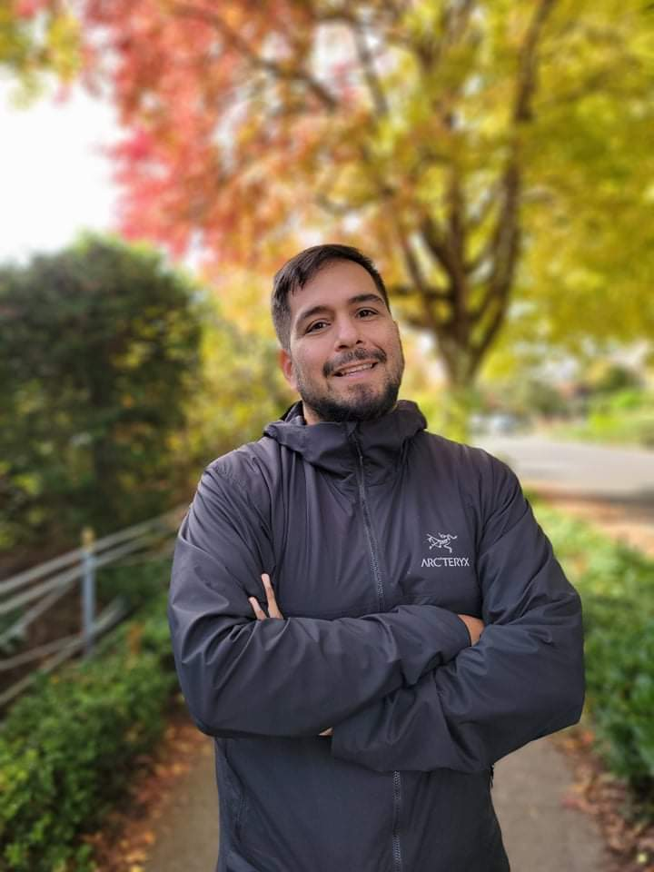
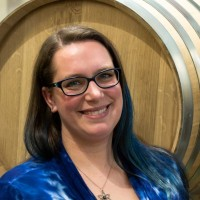
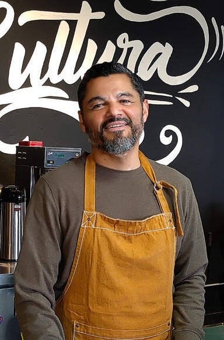

PURA is a community-rooted nonprofit dedicated to the people, businesses, and stories that make downtown Pasco thrive — today and for generations to come.
"We are here to honor the people who built this community, celebrate the businesses that sustain it, and shape a downtown that belongs to all of us — now and for the next generation." — Pasco Urban Renewal Alliance · 106 N 4th Ave, Pasco, WA 99301
We're focused on the things that make the biggest difference to the people who live, work, and raise families in downtown Pasco.

The shops, cafés, restaurants, and services in downtown Pasco aren't just businesses — they're gathering places, family legacies, and the heartbeat of our community. We work to keep them thriving, help new ones get started, and make sure our corridor stays vibrant and welcoming.

Downtown Pasco has a rich and layered cultural story. We're bringing it to life through public murals, community art installations, and creative spaces that reflect who we are — and invite everyone to be part of it. Beauty belongs in every neighborhood.

Great downtowns aren't just open for business — they're alive with people. We're building a calendar of events, markets, festivals, and gatherings that give folks a reason to come downtown, spend time together, and keep coming back.

The families, business owners, and neighbors who have been here for decades are downtown Pasco's greatest strength. Our work starts with them — strengthening what exists, investing in the people already here, and making sure growth benefits the community that built this place.

We're working on the things that make a difference when you walk down the street — better lighting, fresh storefronts, clean sidewalks, flowers, and public spaces that feel safe and welcoming at every hour of the day.

PURA is building partnerships with the City, local schools, businesses, civic organizations, and residents to make sure everyone has a seat at the table. A strong downtown takes everyone — and we're here to make that happen.
PURA focuses on the heart of downtown Pasco:
Home to culturally rich businesses, Peanuts Park, the Pasco Farmers Market, and some of the most welcoming people in the Tri-Cities. This is where community happens — and where we're investing our energy.
Principal office: 106 N 4th Ave, Pasco, WA 99301
PURA is organized around the National Main Street Four-Point Approach® — a proven framework used by hundreds of communities across Washington and the nation to create lasting change in downtown districts.
We work to create the conditions where local businesses can succeed — from recruiting new shops that complement what's already here, to connecting existing businesses with resources, training, and support.
We improve the look, feel, and physical experience of downtown — from historic storefronts and public art to lighting, landscaping, and spaces that reflect the beauty and culture of our community.
We tell the story of downtown Pasco — its culture, its food, its art, its people — and create events and campaigns that bring the community together and make downtown the place to be.
We build the relationships, partnerships, and community foundation that make everything else possible — recruiting volunteers, growing our board, and making sure PURA reflects the full diversity of our community.
Washington State Main Street Program is managed by the Washington Trust for Historic Preservation and has helped communities revitalize downtown commercial districts since 1984. Comparable communities in Washington include Downtown Walla Walla Foundation, Historic Downtown Kennewick Partnership, and Mainstreet Grandview — a fellow majority-Hispanic community in the Yakima Valley and a close peer to what PURA is building.
Downtown Pasco wasn't built overnight, and it wasn't built by any single group. Over more than 140 years, wave after wave of people came here, put down roots, and left their mark — in the buildings, the businesses, the food, the music, and the culture that fill our streets today.
Every community that has called downtown Pasco home brought something irreplaceable. That layered history is not something to look past — it's the foundation we stand on, and it's what makes this place worth revitalizing.
PURA's mission is rooted in that legacy. We honor where we've been by investing in the people who are here right now — and by building something together that the next generation will be proud to inherit.

Our board brings together nonprofit leadership, business ownership, civic experience, arts, and deep community roots — all with one goal: a thriving downtown Pasco.

Co-founder and Executive Director of Geeking Out Kids of Color (GOKiC) in Seattle, where he has spent 15+ years building culturally rooted STEM education programs serving 500+ youth annually. A curriculum designer and cultural bearer of indigenous and two-spirit folk dance. In Pasco, he is a local business owner and community builder.
Outreach Economic VitalityFormer Pasco City Councilmember (District 6), downtown small business owner, and project manager at Pacific Northwest National Laboratory. Craig co-founded the Pasco Taco Crawl — an annual event celebrating local businesses and community. He brings deep knowledge of Pasco's civic landscape and how to get things done.
Design Civic Affairs
Emily oversees PURA's financial health and organizational policies, bringing careful attention to the detail and accountability that a growing nonprofit requires. She developed PURA's foundational governance framework and is committed to building an organization that earns and keeps community trust.
Finance Governance
Co-founder of Café con Arte (430 W. Columbia St.) — a gallery, coffee shop, and cultural hub in the heart of downtown Pasco. A visual arts educator, sculptor, and community builder whose work has helped make downtown Pasco a creative destination. Café con Arte expanded to Kennewick in 2025.
Promotion Arts & CultureWe're just getting started. Here's what PURA is building toward in our first year — quarter by quarter.
We're introducing PURA to the community — meeting business owners, neighbors, and partners along the corridor, and listening to what matters most to the people who make downtown Pasco home. No agenda, just conversation.
We're growing our board to include more downtown voices — business owners, community members, youth, and partners from across the district. Alongside that, our four committees will launch their first programs and events.
We're planning our first community event — a celebration of downtown Pasco's culture, food, and people that brings neighbors together and reminds everyone why this place is worth showing up for.
Working with local artists, we'll begin bringing murals and public art to the downtown corridor — telling the stories of the communities that built this place and creating beauty that belongs to everyone who walks these streets.
Four times a year, PURA will host open community forums — bilingual, welcoming, and centered on the people of downtown Pasco. We'll share what we're working on, hear what the community needs, and make decisions together.
We're building relationships with the City of Pasco, Franklin County, local schools, chambers of commerce, and state partners to bring every available resource to downtown Pasco's businesses and community members.
Whether you're a business owner, a neighbor, a volunteer, or someone who just loves this community — there's a place for you in PURA. Let's build something together.
Pasco Urban Renewal Alliance · 106 N 4th Ave, Pasco, WA 99301 · Washington State Nonprofit